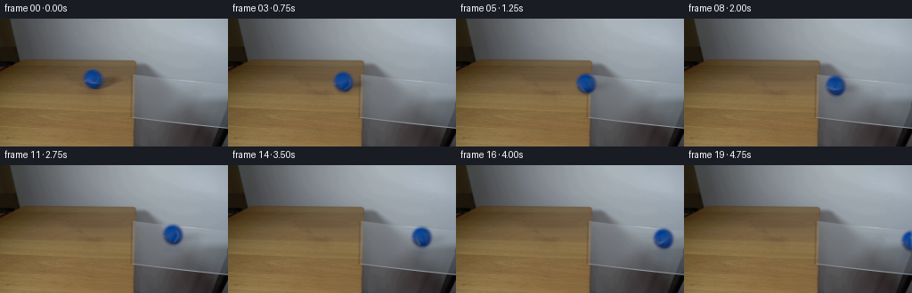
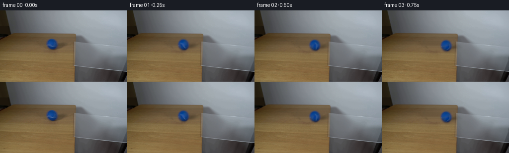
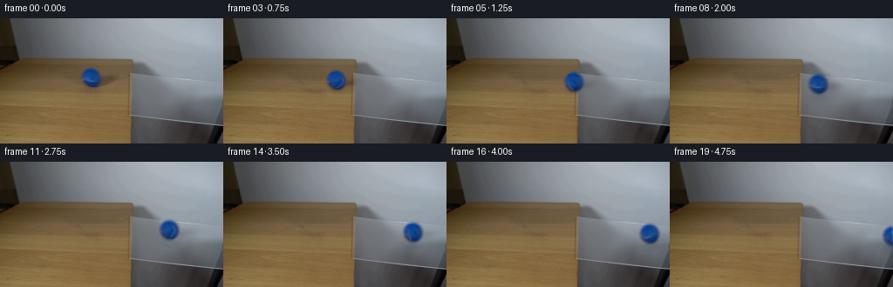
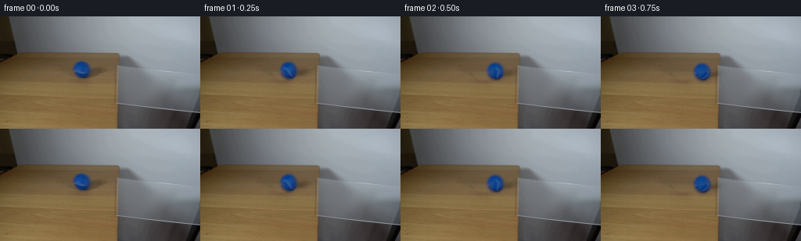

CODING AGENTS AS PIXEL WORLD MODELS
traex/GPT-6.1-Sol · 0026
点击播放 · 原生 RGB 像素
逐轮保存的候选
回放视频、检查图与代码变化。
每份候选均可单独播放。实际图片检查记录在下方工具轨迹中。
候选 01播放与检查图
点击播放 · 原生 RGB 像素


展开代码变化
--- 上一保存版本
+++ 本次保存版本
@@ -0,0 +1,220 @@
+from pathlib import Path
+import numpy as np
+from PIL import Image
+from scipy.ndimage import gaussian_filter, map_coordinates
+from scipy.optimize import least_squares
+import artifact_io
+
+ROOT = Path(__file__).resolve().parent
+TMP = ROOT / '.tmp'
+TMP.mkdir(exist_ok=True)
+
+
+def clean_plate(src):
+ """Continue the observed wood grain through the small moving-object area."""
+ h, w = src.shape[:2]
+ yy, xx = np.mgrid[:h, :w]
+ body = ((xx-104.5)/15.1)**2 + ((yy-67.6)/14.2)**2
+ dx, dy = xx-119, yy-72.1
+ sh = ((dx-.22*dy)/20.8)**2 + ((dy+.16*dx)/8.6)**2
+ mask = np.maximum(np.clip((1.12-body)/.31,0,1), np.clip((1.13-sh)/.35,0,1))
+ cols = np.r_[np.arange(55,90), np.arange(137,147)]
+ q = (cols-110)/40
+ design = np.array([np.ones(len(cols)),q,q*q]).T
+ predicted = src.astype(float).copy()
+ rng = np.random.default_rng(7251)
+ for y in range(49,88):
+ weights = np.ones(len(cols))
+ for _ in range(4):
+ a = design*weights[:,None]
+ coeff = np.linalg.lstsq(a, src[y,cols]*weights[:,None], rcond=None)[0]
+ err = np.linalg.norm(design@coeff-src[y,cols],axis=1)
+ weights = np.minimum(1,3.0/np.maximum(err,.01))
+ qx = (np.arange(w)-110)/40
+ row = np.array([np.ones(w),qx,qx*qx]).T@coeff
+ # Small photographic grain, constant in time, rather than a flat fill.
+ noise = rng.normal(0,.55,(w,1))
+ predicted[y] = row+noise
+ result = src*(1-mask[...,None])+predicted*mask[...,None]
+ return result, mask
+
+
+def fit_ball(src, bg):
+ # A small analytic sphere fitted to the lighting, defocus, and silhouette
+ # of the supplied image. This is image arithmetic, not a learned renderer.
+ ss = 4
+ x0,x1,y0,y1 = 79,143,48,89
+ h,w=y1-y0,x1-x0
+ yy,xx = np.mgrid[:h*ss,:w*ss].astype(float)
+ xx = x0+(xx+.5)/ss-.5
+ yy = y0+(yy+.5)/ss-.5
+ original=src[y0:y1,x0:x1]
+ background=bg[y0:y1,x0:x1]
+ ysmall,xsmall=np.mgrid[y0:y1,x0:x1]
+ rsmall=np.sqrt((xsmall-104.6)**2+(ysmall-67.5)**2)
+ weight=np.ones((h,w))
+ weight[(rsmall<8.8)&(original[...,0]>29)] = .09
+ weight[(rsmall<8.0)&(ysmall>=68)&(xsmall<108)]=.12
+ weight[(rsmall>16)&(xsmall<104)]=.15
+ def down(a):
+ if a.ndim==2:
+ return a.reshape(h,ss,w,ss).mean((1,3))
+ return a.reshape(h,ss,w,ss,-1).mean((1,3))
+ def components(p):
+ cx,cy,rx,ry,blur,shx,shy,sx,sy,amp,contact=p
+ nx=(xx-cx)/rx; ny=(yy-cy)/ry
+ rr=nx*nx+ny*ny
+ alpha=np.clip((1-np.sqrt(rr))*min(rx,ry)*ss+.5,0,1)
+ nz=np.sqrt(np.maximum(0,1-rr))
+ basis=np.stack([np.ones_like(nx),nx,ny,nz,ny*ny,nx*nx,nx*ny],-1)*alpha[...,None]
+ basis=gaussian_filter(basis,(blur*ss,blur*ss,0),mode='constant')
+ basis=down(basis)
+ opacity=basis[...,0]
+ dx=xsmall-cx-shx
+ dy=ysmall-cy-shy+.16*dx
+ shadow=amp*np.exp(-.5*((dx/sx)**2+(dy/sy)**2))
+ shadow+=contact*np.exp(-.5*((xsmall-cx-2.2)/5.6)**2-.5*((ysmall-cy-11.9)/1.7)**2)
+ shadow=np.clip(shadow,0,.55)
+ backdrop=background*(1-shadow[...,None])*(1-opacity[...,None])
+ return basis,backdrop,opacity
+ def solve(p,ret=False):
+ b,backdrop,alpha=components(p)
+ a=b.reshape(-1,7)
+ target=(original-backdrop).reshape(-1,3)
+ wt=weight.reshape(-1)
+ # Mild regularization suppresses implausible high-frequency shading.
+ reg=np.diag([.015,.05,.045,.05,.06,.07,.1])
+ prior=np.array([[10,55,115],[0,-2,-6],[0,-15,-25],[0,12,31],[0,0,-4],[0,0,0],[0,0,0]],float)
+ coeff=np.linalg.lstsq(np.r_[a*wt[:,None],reg],np.r_[target*wt[:,None],reg@prior],rcond=None)[0]
+ pred=backdrop+b@coeff
+ if ret:return coeff,pred,alpha
+ return ((pred-original)*weight[...,None]).ravel()
+ initial=[104.6,67.45,10.15,10.45,.85,13,-.3,10,3.7,.24,.17]
+ lower=[103.8,66.9,9.4,9.8,.55,8,-3,6,2,.04,.02]
+ upper=[105.3,68.2,10.8,11.0,1.5,18,3,15,6,.43,.4]
+ fit=least_squares(solve,initial,bounds=(lower,upper),max_nfev=55,diff_step=.004,loss='soft_l1',f_scale=2.0)
+ p=fit.x
+ coeff,pred,alpha=solve(p,True)
+ fitted=src.copy()
+ fitted[y0:y1,x0:x1]=pred
+ Image.fromarray(np.clip(fitted,0,255).astype('uint8')).save(TMP/'sphere_fit.png')
+ (TMP/'fit.txt').write_text('parameters '+str(p)+'\ncoefficients\n'+str(coeff)+'\nerror '+str(np.sqrt(np.mean((pred-original)**2))))
+ return p,coeff,(x0,x1,y0,y1,pred,alpha)
+
+
+def main():
+ src=np.asarray(Image.open(ROOT/'first_frame.png').convert('RGB')).astype(float)
+ bg,mask=clean_plate(src)
+ Image.fromarray(np.clip(bg,0,255).astype('uint8')).save(TMP/'clean_plate.png')
+ p,coeff,info=fit_ball(src,bg)
+ print((TMP/'fit.txt').read_text())
+ frames = animate(src,bg,p,coeff,info)
+ artifact_io.save(frames, ROOT)
+
+
+def animate(src,bg,p,coeff,info):
+ h,w=src.shape[:2]
+ yy,xx=np.mgrid[:h,:w].astype(float)
+ ss=4
+ yh,xh=np.mgrid[:h*ss,:w*ss].astype(float)
+ xh=(xh+.5)/ss-.5; yh=(yh+.5)/ss-.5
+ cx0,cy0,rx0,ry0,blur,shx,shy,sx,sy,amp,contact=p
+ x0,x1,y0,y1,pred,a0=info
+ # Separate the observed photographic detail from the fitted illumination.
+ detail=np.zeros_like(bg)
+ residue=(src[y0:y1,x0:x1]-pred)/np.maximum(a0[...,None],.12)
+ detail[y0:y1,x0:x1]=np.clip(residue,-45,45)
+ detail=gaussian_filter(detail,(.25,.25,0))
+
+ # Glass occupies the right-hand cantilever, with parallel long edges.
+ # Keep the pane, its specular edges, the table and all wall pixels fixed.
+ glass=np.clip((xx-148.7)/3.0,0,1)
+ glass*=np.clip((yy-(63.0+.115*(xx-149)))/2.2,0,1)
+ glass*=np.clip(((111.2+.119*(xx-149))-yy)/2,0,1)
+
+ def down(a):
+ return a.reshape(h,ss,w,ss,-1).mean((1,3))
+
+ axis=np.array([-.045,.58,.813])
+ axis/=np.linalg.norm(axis)
+
+ def rotated_texture(nx,ny,nz,theta):
+ # Surface coordinates co-rotate with the rolling fuzzy covering.
+ vectors=np.stack([nx,ny,nz],-1)
+ c,s=np.cos(theta),np.sin(theta)
+ material=vectors*c-np.cross(axis,vectors)*s
+ material+=np.sum(vectors*axis,axis=-1)[...,None]*axis*(1-c)
+ mx,my,mz=material[...,0],material[...,1],material[...,2]
+ # The unseen side is smoothly continued with a reversed copy of the
+ # same felt, rather than introducing a new, unrelated ball design.
+ tx=cx0+rx0*mx
+ ty=cy0+ry0*my
+ texture=np.stack([map_coordinates(detail[...,c],[ty,tx],order=1,mode='constant') for c in range(3)],-1)
+ texture*=np.clip((np.abs(mz)-.17)/.35,0,1)[...,None]
+ return texture
+
+ def frame(t):
+ # Slow freely rolling motion: the felt dissipates a little energy on
+ # wood, much less on smooth glass. No imposed acceleration or jump.
+ d=33.6*t-.39*t*t
+ cx=cx0+d
+ cy=cy0+.115*d
+ # Crossing a thin glass edge makes only a subpixel rise in the path.
+ rise=.30*np.clip((cx-145)/7,0,1)
+ cy-=rise
+ scale=1+.00010*d
+ rx,ry=rx0*scale,ry0*scale
+ theta=d/((rx0+ry0)*.5)
+
+ dx=xx-cx-shx*scale
+ dy=yy-cy-shy*scale+.16*dx
+ shadow=amp*np.exp(-.5*((dx/(sx*scale))**2+(dy/(sy*scale))**2))
+ shadow+=contact*np.exp(-.5*((xx-cx-2.2*scale)/(5.6*scale))**2-.5*((yy-cy-11.9*scale)/(1.7*scale))**2)
+ # Most light passes through clear glass; the near-contact shadow and
+ # the weak blue surface reflection remain visible.
+ shadow*=1-.62*glass
+ back=bg*(1-np.clip(shadow,0,.55)[...,None])
+
+ contacty=cy+ry
+ rn=(xx-cx)/rx
+ rm=(yy-contacty-ry*.44)/(ry*.44)
+ refl=.10*np.exp(-.65*(rn*rn+rm*rm))*np.clip((yy-contacty+1)/2,0,1)*glass
+ refl*=np.clip((1.35-rn*rn-rm*rm)/.55,0,1)
+ refl=gaussian_filter(refl,.9)
+ back=back*(1-refl[...,None])+np.array([20.,65.,122.])*refl[...,None]
+
+ nx=(xh-cx)/rx; ny=(yh-cy)/ry
+ rr=nx*nx+ny*ny
+ nz=np.sqrt(np.maximum(0,1-rr))
+ alpha=np.clip((1-np.sqrt(rr))*min(rx,ry)*ss+.5,0,1)
+ basis=np.stack([np.ones_like(nx),nx,ny,nz,ny*ny,nx*nx,nx*ny],-1)
+ color=np.clip(basis@coeff,0,255)
+ premult=gaussian_filter(color*alpha[...,None],(blur*ss,blur*ss,0),mode='constant')
+ opacity=gaussian_filter(alpha,blur*ss,mode='constant').reshape(h,ss,w,ss).mean((1,3))
+ premult=down(premult)
+
+ nx=(xx-cx)/rx; ny=(yy-cy)/ry
+ rr=nx*nx+ny*ny
+ nz=np.sqrt(np.maximum(0,1-rr))
+ texture=rotated_texture(nx,ny,nz,theta)
+ # Preserve the source's lens-softened rim and use rotating detail only
+ # on the central surface where reliable colors can be recovered.
+ fixed=np.stack([map_coordinates(detail[...,c],[cy0+ry0*ny,cx0+rx0*nx],order=1,mode='constant') for c in range(3)],-1)
+ blend=np.clip((.90-np.sqrt(rr))/.16,0,1)
+ texture=texture*blend[...,None]+fixed*(1-blend[...,None])
+ texture*=np.clip((1.1-np.sqrt(rr))/.20,0,1)[...,None]
+ image=back*(1-opacity[...,None])+premult+texture*opacity[...,None]
+ return np.clip(np.round(image),0,255).astype(np.uint8)
+
+ frames=[src.astype(np.uint8)]
+ for i in range(1,20):
+ # A short, photographic exposure; three temporal samples give modest
+ # directional blur without changing the real-time sample cadence.
+ t=i/4
+ exposures=[frame(t+dt).astype(float) for dt in [-.010,0,.010]]
+ frames.append(np.clip(np.round(np.mean(exposures,axis=0)),0,255).astype(np.uint8))
+ return np.stack(frames)
+
+
+if __name__ == '__main__':
+ main()
候选 02播放与检查图
点击播放 · 原生 RGB 像素


展开代码变化
--- 上一保存版本
+++ 本次保存版本
@@ -83,8 +83,8 @@
target=(original-backdrop).reshape(-1,3)
wt=weight.reshape(-1)
# Mild regularization suppresses implausible high-frequency shading.
- reg=np.diag([.015,.05,.045,.05,.06,.07,.1])
- prior=np.array([[10,55,115],[0,-2,-6],[0,-15,-25],[0,12,31],[0,0,-4],[0,0,0],[0,0,0]],float)
+ reg=np.diag([1.6,1.1,1.1,1.6,1.5,1.5,1.5])
+ prior=np.array([[20,47,105],[-3,-4,-9],[1,-12,-25],[-7,24,47],[0,-4,-8],[0,0,0],[0,0,0]],float)
coeff=np.linalg.lstsq(np.r_[a*wt[:,None],reg],np.r_[target*wt[:,None],reg@prior],rcond=None)[0]
pred=backdrop+b@coeff
if ret:return coeff,pred,alpha
可观测工具轨迹
实际执行的命令与返回图片。
命令 1exit 0
/bin/bash -lc 'ls -la && cat prompt.txt && cat GENERATION_RULES.md'
命令 2exit 0
/bin/bash -lc "cat artifact_io.py && python - <<'PY'
from PIL import Image
import numpy as np
im=np.array(Image.open('first_frame.png')); print(im.shape)
print('pixels', [(p,im[p[1],p[0]].tolist()) for p in [(0,0),(128,0),(128,70),(128,100),(10,100),(200,110),(250,130)]])
# small downsample ascii w colored categories
for y in range(0,144,3):
s=''
for x in range(0,256,3):
r,g,b=map(int,im[y,x]);
if b>r*1.15 and b>g*1.05: ch='B'
elif r>g*1.16 and r>b*1.25: ch='w'
elif min(r,g,b)>215: ch=' '
elif min(r,g,b)>175: ch='.'
elif min(r,g,b)>130: ch=':'
elif min(r,g,b)>85: ch='o'
elif min(r,g,b)>40: ch='O'
else: ch='#'
s+=ch
print(f'{y:03d} {s}')
PY"命令 3exit 0
/bin/bash -lc "python - <<'PY'
import numpy as np
from PIL import Image
im=np.asarray(Image.open('first_frame.png')).astype(float)
g=im.mean(axis=2)
chars=' .,:;irsXA253hMHGS#9B&@'
for y in range(40,132,2):
print('%03d'%y+''.join(chars[int(np.clip(g[y,x]/200*(len(chars)-1),0,len(chars)-1))] for x in range(70,256,2)))
print('rgb every 5px')
for y in [44,47,48,49,50,52,55,60,65,70,75,80,90,100,110,120]:
print('y',y, [(x,tuple(im[y,x].astype(int))) for x in [140,145,148,150,152,155,160,170,180,190,200,220,240,255]])
# strongest local grads across image
for y in [48,50,55,60,70,80,90,100,110,120]:
d=np.linalg.norm(im[y,1:]-im[y,:-1],axis=1)
peaks=np.argsort(d[135:])[-10:]+135
print('edges',y,[(int(x),round(float(d[x]),1)) for x in sorted(peaks)])
PY"命令 4exit 0
/bin/bash -lc "python - <<'PY'
from PIL import Image
import numpy as np
im=np.array(Image.open('first_frame.png'))
# ball enlarged glyph with per pixel categories
for y in range(50,89):
s=''
for x in range(83,125):
r,g,b=im[y,x].astype(float)
if b-r>10:
ch='B' if b>95 else ('b' if b>65 else 'o')
elif max(r,g,b)-min(r,g,b)<15: ch='.' if r>70 else 's'
elif r<80 and g<66:ch='x'
else:ch=' '
s+=ch
print(y,s)
print('ball row colors')
for y in range(55,81):
print(y,[(x,tuple(im[y,x])) for x in range(89,117,2)])
PY"命令 5exit 0
/bin/bash -lc "python - <<'PY'
import numpy as np
from PIL import Image
im=np.array(Image.open('first_frame.png')).astype(float)
for x in [145,149,150,155,160,175,190,210,230,250]:
d=np.linalg.norm(im[1:,x]-im[:-1,x],axis=1)
print('x',x,'y-edges',[(int(y),round(d[y],1)) for y in sorted(np.argsort(d[40:])[-15:]+40)])
print([(y,tuple(im[y,x].astype(int))) for y in range(42,125,4)])
PY"命令 6exit 0
/bin/bash -lc "python - <<'PY'
from PIL import Image
import numpy as np
im=np.array(Image.open('first_frame.png')).astype(float)
# rough surface relative brightness rg to see seam
for y in range(56,80):
s=''
for x in range(92,118):
r,g,b=im[y,x];
if b-r<30:s+=' '
else:s+=' .:-=+*#%@'[int(np.clip((r-10)/65*9,0,9))]
print(y,s)
print('libraries')
for m in ['scipy','cv2','imageio']:
try: mod=__import__(m); print(m,mod.__version__)
except Exception as e: print(e)
PY"命令 7exit 0
/bin/bash -lc "python - <<'PY'
import numpy as np
from PIL import Image
im=np.array(Image.open('first_frame.png')).astype(float)
for y in [54,56,58,64,68,70,72,74,76,78,79,80,81,82,83,84,85]:
print(y,[(x,im[y,x].astype(int).tolist()) for x in [64,74,84,89,92,96,104,114,119,124,129,134,139]])
PY"命令 8exit 0
/bin/bash -lc 'OPENBLAS_NUM_THREADS=1 python generate.py'
命令 9exit 0
/bin/bash -lc "OPENBLAS_NUM_THREADS=1 python generate.py && python - <<'PY'
import numpy as np
from PIL import Image
f=np.stack([np.array(Image.open('frames/%02d.png'%i)) for i in range(20)])
print('shape/dtype',f.shape,f.dtype,'exact frame0',np.array_equal(f[0],np.array(Image.open('first_frame.png'))))
for i in [0,1,3,6,9,12,15,18,19]:
a=f[i].astype(float); m=(a[...,2]-a[...,0]>38)&(a[...,2]>75)
y,x=np.where(m)
print(i,'blue count',len(x),'centroid',round(x.mean(),2) if len(x) else '-',round(y.mean(),2) if len(x) else '-', 'range', [int(x.min()),int(x.max()),int(y.min()),int(y.max())] if len(x) else '-')
print('f1 static changes',np.count_nonzero(np.any(f[1]"'!=f[0],2)))
PY'命令 10exit 0
/bin/bash -lc "python - <<'PY'
from PIL import Image
import numpy as np
for i,cx,cy in [(0,104,68),(1,113,69),(3,129,71),(6,154,73),(9,178,76),(12,202,79),(15,225,82)]:
a=np.array(Image.open('frames/%02d.png'%i)).astype(float)
print('\\nFRAME',i)
for y in range(cy-13,cy+14):
out=''
for x in range(cx-14,cx+15):
r,g,b=a[y,x]
if b-r>35: out+=' .:-=+*#%@'[int(np.clip((r-10)/65*9,0,9))]
elif r-b>15:out+='w'
else:out+='.'
print(out)
if i==0:ref=a
if i==1:
sh=np.roll(np.roll(ref,8,1),1,0)
yy,xx=np.mgrid[:144,:256];m=(xx-113)**2+(yy-69)**2<85
print('shift interior diff', np.mean(np.abs(a[m]-sh[m]),0))
PY"命令 11exit 0
/bin/bash -lc "cp generate.py .tmp/generate_v1.py && python - <<'PY' p='generate.py' s=open(p).read().replace(\"reg=np.diag([.015,.05,.045,.05,.06,.07,.1])\", \"reg=np.diag([1.6,1.1,1.1,1.6,1.5,1.5,1.5])\") s=s.replace(\"prior=np.array([[10,55,115],[0,-2,-6],[0,-15,-25],[0,12,31],[0,0,-4],[0,0,0],[0,0,0]],float)\",\"prior=np.array([[20,47,105],[-3,-4,-9],[1,-12,-25],[-7,24,47],[0,-4,-8],[0,0,0],[0,0,0]],float)\") open(p,'w').write(s) PY OPENBLAS_NUM_THREADS=1 python generate.py"
命令 12exit 0
/bin/bash -lc "python - <<'PY'
from PIL import Image
import numpy as np
for i,cx,cy in [(1,113,69),(9,178,76)]:
a=np.array(Image.open('frames/%02d.png'%i)).astype(float)
print('\\nFRAME',i)
for y in range(cy-12,cy+13):
out=''
for x in range(cx-13,cx+14):
r,g,b=a[y,x]
if b-r>35: out+=' .:-=+*#%@'[int(np.clip((r-10)/65*9,0,9))]
elif r-b>15:out+='w'
else:out+='.'
print(out)
print('background change statistics')
f=np.array(Image.open('frames/19.png')).astype(float);a=np.array(Image.open('first_frame.png')).astype(float)
b=np.array(Image.open('.tmp/clean_plate.png')).astype(float)
print('wood patch clean rows red')
for y in range(56,87,2):
print(y, np.round(b[y,90:140:5,0]).astype(int).tolist())
print('ball colors')
for i,cx,cy in [(0,104,68),(1,113,69),(9,178,76),(15,225,82)]:
a=np.array(Image.open('frames/%02d.png'%i)).astype(float)
print(i,a[cy-7:cy+8, cx-6:cx+7].mean((0,1)))
PY"命令 13exit 0
/bin/bash -lc "python - <<'PY'
import numpy as np
from PIL import Image
from pathlib import Path
p=np.load('pixels.npz')['pixels']
s=np.array(Image.open('first_frame.png'),dtype=np.uint32)
packed=(s[:,:,0]<<16)|(s[:,:,1]<<8)|s[:,:,2]
assert p.shape==(144,256,20)
assert np.array_equal(p[:,:,0],packed)
assert len(list(Path('frames').glob('*.png')))==20
print('Validated 20 RGB frames, 256Ã144, exact first frame; 4 fps playback.')
print('Output:',Path('pixels.npz').stat().st_size,'bytes')
PY"保存候选 2 份；完成命令 13 次；可验证图片返回 0 张。原始 API 响应与完整日志保留在本地。